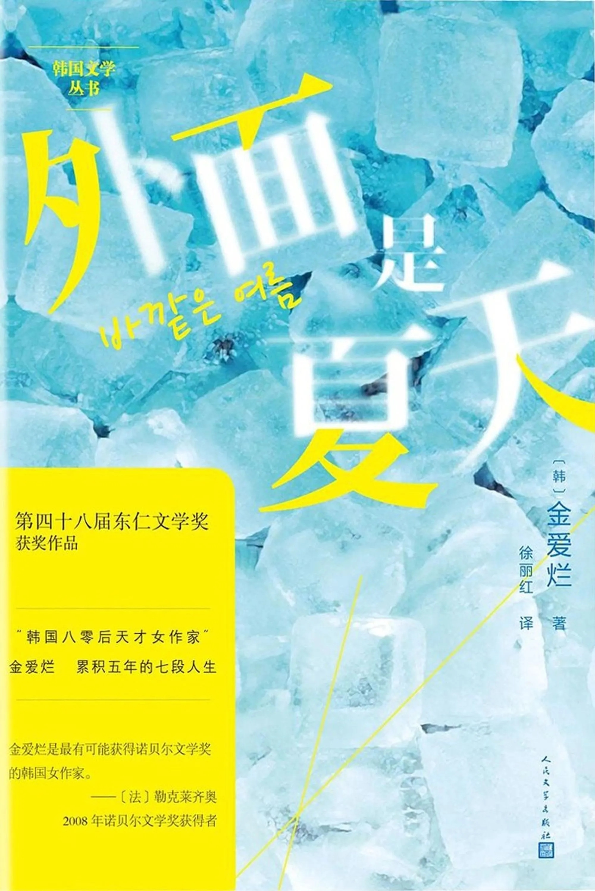

前言
虽然看过不少韩国电影、电视剧，但对于韩国文学，我似乎一无所知。
在不久前，因为好奇被勒克莱齐奥夸赞过的“韩国八零后天才女作家”到底有怎样的魅力，也因为身处炎热的夏日，书名也很应季(笑)，我打开了这本书。
正文
和熟悉的事物告别，这是大人也不擅长的事情。——金爱烂
刚打开书，只是一篇故事，我就被吸引了，不是因为故事，仅仅只因为金爱烂静谧的笔触就已经足够吸引我了。她的文字没有巨大的情绪漩涡，只有字里行间的静谧，文笔细致却不露声色，就像是要将人物内心深处的微小悸动展示出来一样，但这个悸动或是声音太过微小，即使通过细腻的笔触放大来，却还是需要读者屏住呼吸，寂静就随之而来了。
然而她又是一个非常善于观察社会、书写生活的作家。她的故事总是与“个体”紧密相关，她用冷静的手法铺开故事中的一两个人物，描写着日常生活里的片段，但每一处细节的深处似乎都藏着人物巨大而饱满的情绪，是仿佛伸出手才能摸到房屋角落的潮湿。而这一个个人物似乎都没有经过符号化的处理，并且也没有被刻意赋予某种特殊的含义，他们似乎都是社会生活中的某个人。
《外面是夏天》书里是伤心失去的秋天。里面每个故事都弥漫着淡淡的丧失感。七个生活的短篇，七种无法避免的失去，还有七次失去后的彷徨。失去独子的父母，失去小狗的小男孩，失去母语的部落人，失去前途的年轻教师，新晋丈夫的少妇……
金爱烂，能用寥寥几笔就能勾勒出这些失去后的彷徨，其中的很多故事平淡却又富含隐喻，平白易读又充满美学和诗性，引出情绪后但又点到为止，不加过多的渲染与判断，一切都交由读者共情，使得从而重新审视所处的群体社会和个体生活。
我们都在当下生活中，生活中的一切都很熟悉，也离我们很近，但也许是因为过于接近的距离反而造成了表达障碍，有能力将“当下”的生活“文学化”的作家其实并不多，而金爱烂的作品，表明了她不仅有这个能力，而且已经有了非常成熟的风格与美学特征。她的作品足以说明，小说家应该有能力用一种有美感的方式去表达现实中的龌龊与不堪。并不是强行为现实中的苦难加上柔光滤镜，而是忠实它的同时，将它纳入属于自己的那个美学体系去呈现。
在作品面前，再多推荐的言语都无用，沉入书中去吧，进入当下生活的某个角落。“和熟悉的事物告别，这是大人也不擅长的事。”任何人都一样，无论身份、地位、阅历和时代背景，没有人真正地擅长。愿你能在这些故事中对当下的还未失去感到慰藉。
2023/10/31
Yuay
@Yuay